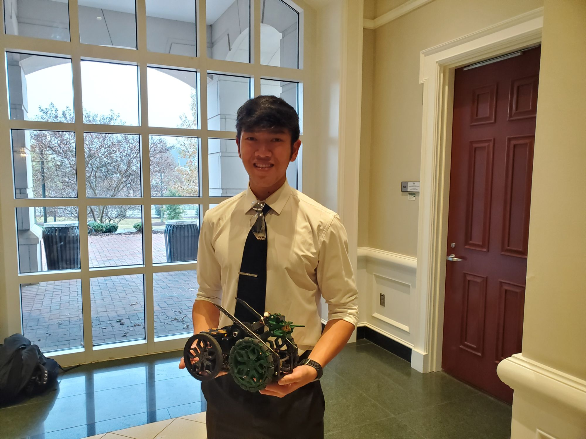

MEGR 3156 students are tasked with building a robot that can traverse a course and obtain and deposit 0.8 lb blocks across an 8" moat. Our team (Team 1) was assigned six members to design, prototype, construct, and test a robot within
the dimensions of 12"x6"x6". Multiple design reviews were done before the robot was approved for construction. Team 1 successfully completed the course with the second fastest time of 1 minute and 16 seconds and received recognition
as the most innovative and best all-around robot.
My individual roles on the team were CAD, Design, and 3D Printing manufacturing. The designs were done in SolidWorks, in addition to Finite Element Analysis (FEA) which
was used to test the tensile and compressive strength of the parts.
The passion for creating websites came after my first internship at Optum in 2017. There, I worked as a SCRUM lead, but got to observe how
designs were being implemented by the developers. I already had previous knowledge of HTML
and CSS but was quickly introduced to different frameworks and methods of designing a webpage. From there, I took it upon myself to further learn the craft. After downloading all the necessary software and binge-watching multiple
YouTube videos, I bought "felixvivongsy.com" as my domain name and created my first personal website. Since then, I have made multiple iterations. I have also been able to use it as a resource to help students in my class
when I was a teacher assistant for Sophomore Design.

At Duke Energy I worked as a reliability engineer. As simple as generating and distributing power may seem,
there is a lot that goes into the industry, that we take for granted! I discovered that numerous outages are recorded and processed before being submitted to a database. This was a tedious task that required a lot of man hours,
so I designed a tool, using Python, that allowed users to upload data packed spreadsheets and recieve feedback (within seconds) on potential errors.


This was a required class for all Mechanical Engineering students at UNCC. The course challenged students to use the engineering design process to conceptualize a product of any kind, with at least one degree of freedom. I decided to create a "Swerve Drive" which is a multi-directional drive train that is well known in the robotics community. Click the button to access the webpage and see more of the design.


During the summer of 2017 & 2018 I interned at Optum. In 2018, I worked as a UI/UX developer to create the architecture of a medical
assistant app called "Lynx". Over the course of this internship I learned different techniques in design, turning those designs into code, and the importance of human psychology when creating user interfaces.


In 2017, I worked as a SCRUM Lead for a team, working on an electronic health record project. This opportunity allowed me to evolve my leadership skills and overcome difficult situations involving the responsibility of others. While working closely with developers, I also picked up the skill of coding in HTML and CSS. My involvement in observing code spiraled into a deep interest in web development and computer science.


My first Internship was back in 2016 at a civil engineering consulting firm, HNTB. At this company, I worked with a lot of traffic data, using
it to analyze past and present roadway diagrams to calculate future congestion for a multitude of roadway projects. Also conducted fieldwork operations where roadway designs and intersections were inspected.

Robotics was a big part of my life throughout high school. It began when I joined a team at another high school, my freshman year. We were lucky enough to win the regional competition in North Carolina and competed at the International
Championship held in St. Louis, Missouri. In 2014, I Co-Founded a robotics team for Wake STEM Early College High School with three of my colleagues. The team has received several awards and earned the opportunity to compete in
the International Championships in 2016. The organization still exists today and has over 50+ student members from the school and nearby communities.